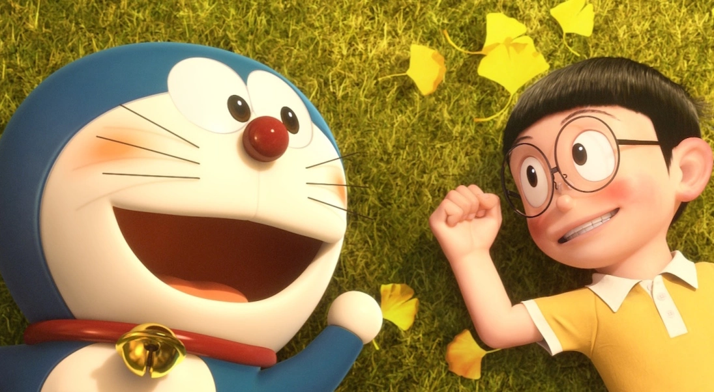

About Doremoon
Doremoon is a fictional characher from the future who helped this lonely and sad boy named nobita, Doremoon is super-cute and always ready to helps his friends when they are in need.
Doremoon and Nobita relaxing in fields
Characteristics
- He's an Alien Robot
- He has the solutions for all the problems
- He loves to help his friends
- He has cool advanced gadgets from the future
Friends
Although everyone wants to be Doremoon's friends but he chooses his friends very wisely and Nobita is his best friend